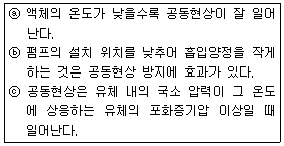
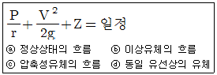
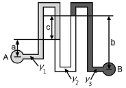
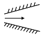
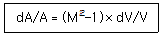
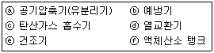
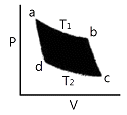
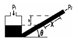

가스기사 (2010-03-07 기출문제)
1과목: 가스유체역학
1. 550K인 공기가 15m/s의 속도로 매끈한 평판 위를 흐르고 있다. 평판 선단으로부터의 거리가 몇 m인 지점에서 층류에서 난류로의 천이가 일어나는가? (단, 천이레이놀즈 수는 5×105이고 동정성계수는 4.2×10-5m2/s이다.
- 0.7
- 1.4
- 2.1
- 2.8
(정답률: 65%)

2. 피토관에 대한 설명으로 틀린 것은?
- 피토관의 입구에는 동압과 정압의 합인 정체압이 작용한다.
- 측정원리는 베르누이 정리이다.
- 측정된 유속은 정체압과 정압 차이의 제곱근에 비례한다.
- 동압과 정압의 차를 측정한다.
(정답률: 73%)
3. 절대압력이 대기압력보다 높은 경우 계기압력과 절대압력과의 관계식으로 옳은 것은?
- 절대압력＝대기압력＋계기압력
- 절대압력＝대기압력 - 계기압력
- 절대압력＝표준대기압력＋계기압력
- 절대압력＝표준대기압력 - 계기압력
(정답률: 70%)
4. 유체의 점도(동정도)에 대한 설명으로 옳지 않은 것은?
- 기체의 점도는 온도가 증가하면 일반적으로 상승한다.
- 동점도(kinematic viscosity)는 절대점도와 밀도의 비이다.
- 점도의 차원은 ML-1T-1이다.
- 고압에서 기체의 점도는 무시할 수 있다.
(정답률: 65%)
5. 펌프에서의 공동현상(Cavitation)에 관한 다음 설명 중 옳은 것을 모두 고르면?

- ⓐ
- ⓑ
- ⓐ, ⓒ
- ⓐ, ⓑ
(정답률: 64%)
6. 단면적이 변하는 관로를 비압축성 유체가 흐르고 있다. 지름이 15㎝인 단면에서의 평균속도 4m/s이면 지름이 20㎝인 단면에서의 평균속도는 몇 m/s인가?
- 1.⑤
- 1.25
- 2.⑤
- 2.25
(정답률: 59%)
7. 100kPa, 25℃에 있는 어떤 기체를 등엔트로피 과정으로 135kPa까지 압축하였다. 압축 후의 온도는 약 몇 ℃인가? (단, 이 기체의 정압비열 Cp는 1.213kJ/㎏·K이고 정적 비열 Cy는 0.821kJ/㎏·K이다.)
- 45.5
- 55.5
- 65.5
- 75.5
(정답률: 68%)
8. 다음 중 체적탄성 계수에 대한 설명으로 틀린 것은? (단, k는 비열비이고 P는 압력이다.)
- 유체의 압축성에 반비례 한다.
- 압력과 동일한 차원을 갖는다.
- 압력과 점성에 무관하다.
- 가역단열변화에서는 체적탄성계수 K＝kP의 관계가 있다.
(정답률: 72%)
9. 동력의 단위는 ST 단위계로 [W]이다. 이것을 차원식으로 옳게 나타낸 것은? (단, M은 질량, L은 길이, T는 시간의 차원을 나타낸다.)
- [ML3T-3]
- [MLT-3]
- [ML2T-3]
- [MLT-2]
(정답률: 67%)
10. 가로와 세로의 길이가 모두 80㎝인 정사각형을 밑면으로 하고 높이가 120㎝인 수직 직육면체의 개방된 저장탱크에 물을 가득 채웠다면 한 측면에 미치는 유체의 힘은 몇 ㎏f인가?
- 451
- 576
- 616
- 708
(정답률: 50%)
11. 다음과 같은 베르누이 방정식이 적용되는 조건을 모두 나열한 것은?

- ⓐ, ⓑ, ⓓ
- ⓑ, ⓓ
- ⓐ, ⓒ
- ⓑ, ⓒ, ⓓ
(정답률: 73%)
12. 냇물을 건널 때 안전을 위하여 일반적으로 물의 폭이 넓은 곳으로 건너간다. 그 이유는 폭이 넓은 곳에서는 유속이 느리기 때문이다. 이는 다음 중 어느 원리와 가장 관계가 깊은가?
- 연속방정식
- 운동량방정식
- 베르누이의 방정식
- 오일러의 운동방정식
(정답률: 72%)
13. 그림과 같이 비중량이 γ1, γ2, γ3인 세 가지의 유체로 채워진 마노미터에서 A위치와 B위치의 압력차이(PB-PA)는?

- -aγ1-bγ2＋cγ3
- -aγ1＋bγ2-cγ3
- aγ1-bγ2-cγ3
- aγ1-bγ2＋cγ3
(정답률: 72%)
14. 2차원 직각좌표계 (×,y) 상에서×방향의 속도를 u, y방향의 속도를 v라고 한다. 어떤 이상유체의 2차원 정상유동에서 v＝-Ay일 때 다음 중 ×방향의 속도 u가 될 수 있는 것은? (단, A는 상수이고 A＞0이다.)
- A×
- -A×
- Ay
- -2A×
(정답률: 65%)
15. 안지름 5㎝인 관 내를 흐르는 유동의 임계 레이놀드수가 2000이면 임계 유속은 몇 ㎝/s인가? (단, 유체의 동점성계수는 0.0131cm2/s이다.)
- 5.24
- 8.93
- 9.92
- 10.08
(정답률: 58%)
16. 다음 중 1atm과 가장 거리가 먼 값은?
- 1.013bar
- 1.37psi
- 10.332mH2O
- 760㎜Hg
(정답률: 75%)
17. 그림과 같은 덕트에서의 유동이 아음속 유동일 때 속도 및 압력의 관계를 옳게 표시한 것은?

- 속도감소, 압력감소
- 속도증가, 압력증가
- 속도증가, 압력감소
- 속도감소, 압력증가
(정답률: 67%)
18. 강관 속을 물이 흐를 때 내부의 어느 한 지점에서의 전단력이 2N 이고, 그 지점의 면적이 250cm2라고 하면 이 지점의 전단응력은 몇 ㎏/m·s2인가?
- 0.4
- 0.8
- 40
- 80
(정답률: 49%)
19. 기계효율은 ηm, 수력효율을 ηh, 체적효율을 ηv라 할 때 펌프의 총효율은?
- (ηm×ηh)/ηv
- (ηm×ηv)/ηh
- ηm×ηh×ηv
- (ηv×ηh)/ηm
(정답률: 80%)
20. 관 내의 압축성 유체의 경우 단면적 A와 마하수 M, 속도 V 사이에 다음과 같은 관계가 성립한다고 한다. 마하수가 2일 때 속도를 2% 감소시키기 위해서는 단면적을 몇 % 변화시켜야 하는가?

- 6% 증가
- 6% 감소
- 4% 증가
- 4% 감소
(정답률: 68%)
2과목: 연소공학
21. 연료를 완전연소시키기 위한 조건이 아닌 것은?
- 연료와 공기의 혼합 촉진
- 연료에 충분한 공기를 공급
- 노내 온도를 낮게 유지
- 연료나 공기온도를 높게 유지
(정답률: 73%)
22. 연료 1㎏에 대한 이론산소량(Nm3/㎏)를 구하는 식은?
- 2.67C＋7.6H-(O/8-S)
- 8.89C＋26.67(H-O/8)＋3.33S
- 11.49C＋34.5(H-O/8)＋4.3S
- 1.87C＋5.6(H-O/8)＋0.7S
(정답률: 59%)
23. 125℃, 10atm에서 압축계수(Z)가 0.96일 때 NH3(g) 35㎏의 부치는 약 몇 Nm3인가? (단, N의 원자량 14, H의 원자량은 1이다.)
- 2.81
- 4.28
- 6.45
- 8.54
(정답률: 52%)
24. 가연성 혼합기 중에서 화염이 형성되어 전파할 수 있는 가연성 기체 농도의 한계를 의미하지 않는 것은?
- 연소한계
- 폭발한계
- 가연한계
- 소영한계
(정답률: 70%)
25. 임계온도가 높은 순서에서 낮은 순으로 바르게 나열된 것은?
- Cl2＞C3H8＞CH4＞O2
- C3H8＞CH4＞O2＞Cl2
- CH4＞O2＞Cl2＞C3H8
- O2＞Cl2＞C3H8＞CH4
(정답률: 52%)
26. 메탄 90v%, 에탄 6v%, 부탄 4v%의 혼합가스의 공기 중 폭발하한계는 얼마인가? (단, 각 성분의 폭발하한계는 메탄 5.0, 에탄 3.0, 부탄 1.8v%이다.)
- 5.6%
- 56%
- 4.5%
- 45%
(정답률: 66%)
27. 액체상태의 프로판이 이론 공기연료비로 연소하고 있을 때 저발열량은 약 몇 kJ/㎏인가? (단, 이때 온도는 25℃이고, 이 연료의 증발엔탈피는 360kJ/㎏이다. 또한 기체상태의 C3H8의 형성엔탈피는 –103909kJ/kmol, CO2의 형성엔탈피는 –393757kJ/kmol, 기체상태의 H2O의 형성엔탈피는 –241971kJ/kmol이다.)
- 23501
- 46017
- 50002
- 2149155
(정답률: 60%)
28. 엔트로피의 증가에 대한 설명으로 옳은 것은?
- 비가역 과정의 경우 계와 외계의 에너지의 총합은 일정하고, 엔트로피의 총합은 증가한다.
- 비가역 과정의 경우 계와 외계의 에너지의 총합과 엔트로피의 총합이 함께 증가한다.
- 비가역 과정의 경우 물체의 엔트로피와 염원의 엔트로피의 합은 불변이다.
- 비가역 과정의 경우 계와 외계의 에너지의 총합과 엔트로피의 총합은 불변이다.
(정답률: 67%)
29. 다음 기체의 연소 반응 중 가스의 단위체적당 발열량(kcal/Nm3)이 가장 큰 것은?
- H2＋(1/2)O2 → H2O
- C2H2＋(5/2)O2 → 2CO2＋H2O
- C2H6＋(7/2)O2 → 2CO2＋3H2O
- CO＋(1/2)O2 → CO2
(정답률: 62%)
30. 아세틸렌(C2H2)에 대한 설명 중 틀린 것은?
- 산소와 혼합하여 3300℃까지의 고온을 얻을 수 있으므로 용접에 사용된다.
- 가연성 가스 중 폭발한계가 가장 적은 가스이다.
- 열이나 충격에 의해 분해폭발이 일어난다.
- 용기에 충전할 때에 단독으로 가압 충전할 수 없으며 용해 충전한다.
(정답률: 73%)
31. 카르노사이클(Carnot Cycle)이 ①100℃와 200℃ 사이에서 작동하는 것과 ②300℃와 400℃ 사이에서 작동하는 것이 있을 때, 이 경우 열효율은 다음 중 어떤 관계에 있는가?
- ①은 ②보다 열효율이 크다.
- ①은 ②보다 열효율이 작다.
- ①과 ②의 열효율은 같다.
- ②는 ①의 열효율 제곱과 같다.
(정답률: 67%)
32. 엔탈피에 대한 설명 중 옳지 않은 것은?
- 열량을 일정한 온도로 나눈 값이다.
- 경로에 따라 변화하지 않는 상태함수이다.
- 엔탈피의 측정에는 흐름열량계를 사용한다.
- 내부에너지와 유동일(흐름일)의 합으로 나타낸다.
(정답률: 53%)
33. 방폭전기기기에 사용되는 정션박스(junotion bo×), 푸울 박스(pull bo×), 접송함에 적합한 방폭구조의 표시기호는?
- p
- o
- d
- s
(정답률: 66%)
34. 가스의 폭발등급은 안전간격에 따라 분류한다. 다음 중 안전간격이 넓은 것부터 옳게 나열된 것은?
- 수소＞에틸렌＞프로판
- 에틸렌＞수소＞프로판
- 수소＞프로판＞에틸렌
- 프로판＞에틸렌＞수소
(정답률: 64%)
35. -5℃ 얼음 10g을 16℃의 물로 만드는데 필요한 열량은 몇 kJ인가? (단, 얼음의 비열은 2.1J/g·k이고, 용해열은 335J/g이다.)
- 3.01
- 4.12
- 5.23
- 6.34
(정답률: 58%)
36. 산화염과 환원염에 대한 설명으로 가장 옳은 것은?
- 산화염은 이론공기량으로 완전연소시켰을 때의 화염을 말한다.
- 산화염은 공기비를 너무 크게 하여 연소가스 중 산소가 포함된 화염을 말한다.
- 환원염은 이론공기량으로 완전연소시켰을 때의 화염을 말한다.
- 환원염은 공기비를 너무 크게 하여 연소가스 중 산소가 포함된 화염을 말한다.
(정답률: 58%)
37. 공기나 증기 등의 기체를 분무매체로 하여 연료를 무화 시키는 방식은?
- 유압 분무식
- 이류체 무화식
- 충돌 무화식
- 정전 무화식
(정답률: 65%)
38. 내압방폭구조로 전기기기를 설계할 때 가장 중요하게 고려해야 할 것은?
- 가연성 가스의 최소점화에너지
- 가연성가스의 안전간극
- 가연성가스의 연소열
- 가연성가스의 발화열
(정답률: 75%)
39. 압력 3000kPa, 체적 0.06m3의 가스를 일정한 압력하에서 가열팽창시켜 체적이 0.09m3으로 되었을 때 절대일은 약 몇 kJ인가?
- 90
- 180
- 270
- 377
(정답률: 45%)
40. 최고온도 600℃와 최저온도 50℃사이에서 작용되는 열기관의 이론적 효율은?
- 35.15%
- 46.06%
- 57.27%
- 63.00%
(정답률: 59%)
3과목: 가스설비
41. 가스 누출을 조기에 발견하기 위하여 사용되는 냄새가 나는 물질(부취제)이 아닌 것은?
- T.H.T
- T.B.M
- D.M.S
- T.E.A
(정답률: 73%)
42. 압축가스별 압축기의 특징에 대한 설명으로 틀린 것은?
- 아세틸렌압축기는 높은 압축비를 유지하여 금속아세틸라이드의 발생을 방지한다.
- 산소압축기는 윤활유의 사용이 불가능하다.
- 산소압축기는 물이 크랭크실로 들어가지 않는 구조로 한다.
- 수소압축기는 누설이 되기 쉬우므로 누설되면 가스를 흡입측으로 되돌리는 구조로 한다.
(정답률: 43%)
43. AFV식 정압기의 작동상황에 대한 설명으로 옳은 것은?
- 가스 사용량이 감소하면 고무슬리브의 개도는 증대된다.
- 2차 압력이 저하하면 구동압력은 상승한다.
- 가스사용량이 증가하면 구동압력은 저하한다.
- 구동압력은 2차축 압력보다 항상 낮다.
(정답률: 45%)
44. 발열량이 13000kcal/m3이고, 비중이 1.3, 공급 압력이 200㎜H20인 가스의 웨베지수는?
- 10000
- 11402
- 13000
- 16900
(정답률: 71%)
45. 고압식 액체산소 분리공정 순서로 옳은 것은?

- ⓐ → ⓑ → ⓒ → ⓓ → ⓔ → ⓕ
- ⓒ → ⓐ → ⓑ → ⓔ → ⓓ → ⓕ
- ⓑ → ⓐ → ⓒ → ⓓ → ⓔ → ⓕ
- ⓐ → ⓒ → ⓑ → ⓔ → ⓓ → ⓕ
(정답률: 53%)
46. 소형 저장탱크 설치에 대한 설명으로 옳지 않은 것은?
- 충전질량은 3톤 미만이어야 한다.
- 동일 장소에 설치하는 소형저장탱크의 수는 이하로 한다.
- 소형저장탱크는 그 기초가 지면과 동일한 높이에 설치하여야 한다.
- 소형저장탱크에는 정전기 제거조치를 하여야 한다.
(정답률: 66%)
47. 비점이 설치 넓은 냉매를 사용하여 저비점의 기체를 액화하는 사이클을 무엇이라 하는가?
- 캐스케이드 액화사이클
- 린데 액화사이클
- 필립스 액화사이클
- 클라우드 액화사이클
(정답률: 52%)
48. 탄소강에 소량씩 함유하고 있는 원소의 영향에 대한 설명으로 옳지 않은 것은?
- 인(P)은 상온에서 충격지가 떨어지며, 담금균열의 원인이 된다.
- 망간(Mn)은 점성을 증가시키고 고온 가공을 쉽게 한다.
- 구리(Cu)는 인상강도의 탄성한도를 높이며 내식성을 감소시킨다.
- 규소(Si)는 유동성을 좋게 하나 냉간가공성을 나쁘게 한다.
(정답률: 58%)
49. 다음은 카르노(carnot)사이클의 P - V 선도이다. 과정에 대하여 옳게 나타낸 것은?

- 과정 a → b : 등온팽창
- 과정 b → c : 단열압축
- 과정 c → d : 단열팽창
- 과정 d → a : 등온압축
(정답률: 62%)
50. LP가스 장치에서 자동교체식 조정기를 사용할 경우의 장점에 해당되지 않는 것은?
- 잔액이 거의 없어질 때까지 소비된다.
- 용기교환주기의 폭을 좁힐 수 있어, 가스발생량이 적어진다.
- 전체 용기 수량이 수동교체식의 경우 보다 적어도 된다.
- 가스소비시의 압력변동이 적다.
(정답률: 54%)
51. 고압가스설비는 사용압력의 몇 배 이상의 압력에서 항복을 일으키지 않는 두께를 갖도록 설계해야 하는가?
- 2배
- 10배
- 20배
- 100배
(정답률: 73%)
52. -3℃에서 열을 흡수하여 27℃에 발열하는 냉동기의 최대 성적계수는?
- 4.5
- 9.0
- 10.0
- 15.0
(정답률: 58%)
53. 강이 200~300℃에서 인장강도의 경도가 커지고 연신율이 감소되어 취약하게 되는 성질을 무엇이라 하는가?
- 적열취성
- 청열취성
- 상온취성
- 수소취성
(정답률: 54%)
54. 가스액화분리장치용 구성기기 중 왕복동식 팽창기의 특징에 대한 설명으로 틀린 것은?
- 고압식액체산소분리장치, 수소액화장치, 헬륨액화기 등에 사용된다.
- 흡입압력은 저압에서 고압(20MPa)까지 범위가 넓다.
- 왕복동식 팽창기의 효율은 85~90%로 높다.
- 처리 가스량이 1000m3/h이상의 대량이면 다기통이 된다.
(정답률: 59%)
55. 도시가스 홀더(gas holder)의 기능에 대한 설명으로 가장 거리가 먼 것은?
- 가스 수요의 시간적 변화에 대해 안정적인 공급이 가능하다.
- 조성이 다른 가스를 혼합하여 가스의 성분, 열량, 연소성을 균일화 한다.
- 가스 홀더를 설치함으로서 도시가스 폭발을 방지할 수 있다.
- 가스 홀더를 소비지역 가까이 등으로써 가스의 최대 사용 시 제조소에서 배관수송량을 안정하게 할 수 있다.
(정답률: 59%)
56. 에틸렌의 제조공정에 해당되지 않는 것은?
- 열분해
- 추출
- 압축
- 정제
(정답률: 50%)
57. 원심펌프에서 회전치의 비속도(specific speed)에 대한 설명으로 틀린 것은?
- 회전차의 형상을 나타내는 척도가 된다.
- 펌프의 성능을 알 수 있다.
- 최적합한 회전수를 결정한다.
- 고양정, 소유량의 펌프일수록 비속도의 값은 크게 된다.
(정답률: 58%)
58. 수소를 공업적으로 제조하는 방법이 아닌 것은?
- 수전해법
- 수성가스법
- LPG분해법
- 석유의 분해법
(정답률: 57%)
59. 정압기를 평가, 선정할 경우 정특성에 해당되는 것은?
- 유량과 2차 압력과의 관계
- 1차 압력과 2차 압력과의 관계
- 유량과 작동 차압과의 관계
- 메인밸브의 열림과 유량과의 관계
(정답률: 69%)
60. 액체 이송 시 베이퍼록(Vapor-rock) 발생방지 대책으로 옳은 것은?
- 열매체를 이용하여 실린더 라이너의 외부 온도를 상승시킨다.
- 흡입관 지름을 크게 한다.
- 흡입관로에 배관내경 1/2크기의 오리피스를 설치한다.
- 펌프설치 위치를 높인다.
(정답률: 61%)
4과목: 가스안전관리
61. 차량에 고정된 탱크로 일정량 이상의 메탄 운반 시 분말 소화제를 갖추고자 할 때 소화기의 능력단위로 옳은 것은?
- BC용 B - 8 이상
- BC용 B - 10 이상
- ABC용 B - 8 이상
- ABC용 B - 10 이상
(정답률: 66%)
62. 이동식부탄연소기(카세트식)의 구조를 바르게 설명한 것은?
- 용기장착부 이외에 용기가 들어가는 구조이어야 한다.
- 연소기는 50% 이상 충전된 용기가 연결된 상태에서 어느 방향으로 기울여도 20°이내에서는 넘어지지 아니하고, 부속품의 위치가 변하지 아니하여야 한다.
- 용기연결레버가 없는 것은 콕이 닫힌 상태에서 예비적 동작 없이는 열리지 아니하는 구조로 한다. 다만, 소화안전장치가 부착된 것은 그러하지 아니한다.
- 연소기에 용기를 연결할 때 용기 아랫부분을 스프링의 힘으로 직접 밀어서 연결하는 방법 또는 자석에 의하여 연결하는 방법이어야 한다.
(정답률: 52%)
63. 용기보관실에 고압가스 용기를 취급 또는 보관하는 때의 관리기준에 대한 설명 중 틀린 것은?
- 충전용기와 잔가스 용기는 각각 구분하여 용기보관 장소에 놓는다.
- 용기보관 장소의 주위 8m 이내에는 화기 또는 인화성 물질이나 발화성 물질을 두지 아니한다.
- 충전용기는 항상 40℃ 이하의 온도를 유지하고 직사광선을 받지 않도록 조치한다.
- 가연성가스 용기 보관장소에는 방폭형, 휴대용 손전등 외의 등화를 휴대하고 들어가지 아니한다.
(정답률: 66%)
64. LP가스의 일반적인 성질에 대한 설명 중 틀린 것은?
- 석유계 고급탄화수소의 혼합물이다.
- 가스상태의 LP가스는 공기보다 무거워 낮은 곳에 체류한다.
- 완전연소를 위한 공기의 부피는 가스부피의 약 24배 내지 30배가 필요하다.
- 폭발범위가 좁고, 연소속도는 늦으나 발화온도는 높다.
(정답률: 45%)
65. 액화석유가스 저장시설에서 긴급차단장치를 조작할 수 있는 위치는 해당 저장탱크로부터 몇 m 이상 떨어진 곳이어야 하는가? (단, 소형저장탱크는 제외한다.)
- 2
- 3
- 5
- 8
(정답률: 60%)
66. 아세틸렌을 용기에 충전하는 때의 충전 중의 압력은 몇 MPa 이하로 하고, 충전 후에는 압력이 몇 ℃에서 몇 MPa 이하가 되도록 정치하여야 하는가?
- 3.5MPa, 15℃에서 2.5MPa
- 3.5MPa, 35℃에서 2.5MPa
- 2.5MPa, 15℃에서 1.5MPa
- 2.5MPa, 35℃에서 1.5MPa
(정답률: 65%)
67. 안전성 평가기법 중 공정 및 설비의 고장형태 및 영향, 고장형태별 위험도 순위 등을 결정하는 기법은?
- 위험과운전분석(HAZOP)
- 이상위험도분석(FUECA)
- 상대위험순위결정분석(DON And Mond Indices)
- 원인결과분석(CCA)
(정답률: 54%)
68. 안정성, 편리성 및 호환성을 확보하기 위한 압력조정기의 구조 및 치수기준으로 옳은 것은?
- 출구압력을 변동시킬 수 있는 구조로 한다.
- 용량 30㎏/h 미만의 1단감압식 저압조정기는 몸통과 덮개를 일반공구로 분리할 수 없는 구조로 한다.
- 용량 10㎏/h를 초과하는 압력조정기의 방출구는 배관접속이 가능한 구조로 한다.
- 자동절제식조정기의 경우에는 사용 쪽 용기 안의 압력이 0.1MPa 이상일 때 표시용량의 범위에서 예비 쪽 용기에서 가스가 공급되지 아니하는 구조로 한다.
(정답률: 44%)
69. 도시가스용 염화비닐호스의 성능기준에 대한 설명으로 옳은 것은?
- 호스는 3MPa이상 압력에서 실시하는 내압시험에서 이상이 없어야 한다.
- 호스는 0.1MPa 이하 압력에서 실시하는 기밀시험에서 누출이 없는 것으로 한다.
- 호스안층의 인장강도는 36.7N/5m폭 이상인 것으로 한다.
- 호스의 안층은 60℃에서 48시간 공기가열노화시험을 한 후 인장강도 저하율이 10% 이하인 것으로 한다.
(정답률: 45%)
70. 냉동설비와 1일 냉동능력 1톤의 산정기준에 대한 연결이 바르게 된 것은?
- 원심식압축기 사용 냉동설비 - 압기의 원동기-정격출력 1.2kW
- 원심식압축기 사용 냉동설비 - 발생기를 가열하는 1시간의 입열량 3320kcal
- 흡수식냉동설비 - 압축기의 원동기 정격출력 2.4kW
- 흡수식냉동설비 - 발생기를 가열하는 1시간의 입열량 7740kcal
(정답률: 53%)
71. 산소기체가 40L의 용기에 27℃, 150atm으로 압축 저장되어 있다. 이 용기에는 몇 ㎏의 산소가 충전되어 있는가?
- 6.8
- 7.8
- 9.6
- 10.6
(정답률: 59%)
72. 압축천연가스충전시설의 고정식자동차충전소 시설기준 중 안전거리에 대한 설명으로 옳은 것은?
- 처리설비·압축가스설비 및 충전설비는 사업소경계까지 20m 이상의 안전거리를 유지한다.
- 저장설비·처리설비·압축가스설비 및 충전설비는 인화성물질 또는 가연성물질의 저장소로부터 8m 이상의 거리를 유지한다.
- 충전설비는 도로경계까지 10m 이상의 거리를 유지한다.
- 저장설비·압축가스설비 및 충전설비는 철도까지 20m 이상의 거리를 유지한다.
(정답률: 61%)
73. 내압성능을 확보하여야 하는 냉매설비에서 내압성능을 확인하기 위한 시험압력의 기준은?
- 상용압력 이상
- 상용압력의 1.5배 이상
- 설계압력 이상
- 설계압력의 1.5배 이상
(정답률: 44%)
74. 고압가스를 차량에 적재·운반할 때 몇 km 이상의 거리를 운행하는 경우에 중간에 충분한 휴식을 취한 후 운행하여야 하는가?
- 100km
- 200km
- 300km
- 400km
(정답률: 75%)
75. 도시가스사업자 및 특정가스사용시설 안전관리자의 임무가 아닌 것은?
- 가스공급시설 또는 사용시설의 안전유지
- 정기검사 및 수시검사에서 부적합 판정을 받은 시설의 개선
- 종업원에 대한 안전관리를 위하여 필요한 사항의 지휘·감독
- 가스공급시설 또는 특정가스사용시설의 안전에 관한 업무의 총괄관리
(정답률: 52%)
76. 독성가스의 배관을 주위의 상황에 따라 안전한 구조를 갖도록 하기 위하여 2중관 구조로 한다. 다음 중 반드시 2중관으로 하여야 하는 가스는?
- 염화메탄
- 벤젠
- 일산화탄소
- 이황화탄소
(정답률: 55%)
77. 가스공급시설에 비상공급시설의 설치방법의 기준으로 틀린 것은?
- 비상공급시설에는 접근을 금지하는 내용의 경계표시를 설치한다.
- 고압의 비상공급시설은 최고사용압력의 1.5배 이상의 압력으로 내압시험을 실시하여 이상이 없는 것으로 한다.
- 비상공급시설 중 가스가 통하는 부분은 최고사용압력의 1.1배 이상의 압력으로 기밀시험이나 누출검사를 실시하여 이상이 없는 것으로 한다.
- 비상공급시설은 그 외면으로부터 제1종 보호시설까지의 거리가 10m 이상이 되도록 한다.
(정답률: 48%)
78. 저장능력이 4톤인 액화석유가스 저장탱크 1기와 산소탱크 1기의 최대지름이 각각 4m, 2m일 때 상호간의 최소 이격거리는?
- 1m
- 1.5m
- 2m
- 2.5m
(정답률: 58%)
79. 일정 규모 이상의 고압가스 저장탱크 및 압력용기를 설치하는 경우 내진설계를 하여야 한다. 다음 중 내진설계를 하지 않아도 되는 경우는?
- 저장능력 10톤인 산소저장탱크
- 저장능력 500m3인 수소저장탱크
- 저장능력 3톤인 암모니아저장탱크
- 증류탑으로서 높이 10m의 압력용기
(정답률: 62%)
80. 다음 LPG 사용자 중 가스사고배상책임보험을 가입하지 않아도 되는 경우는?
- 시장에서 액화석유가스의 저장능력이 120㎏인 저장설비를 갖추고 사용하는 경우
- 지하의 집단급식소로서 상시 1회 수용인원이 60인 인 급식소에서 가스를 사용하는 경우
- 저장능력이 300㎏(자동절체기 설치)인 저장설비를 갖추고 음식점에서 사용하는 경우
- 영업장 면적이 200m2인 학원에서 난방용으로 가스보일러를 사용하는 경우
(정답률: 64%)
5과목: 가스계측기기
81. 다음 중 여과기의 설치가 반드시 필요한 가스미터는?
- 막식가스미터
- 루트가스미터
- 터빈식가스미터
- 습식가스미터
(정답률: 52%)
82. 우연오차에 대한 설명으로 옳은 것은?
- 완전한 제거가 가능하다.
- 산포에 의해 일어나는 오차를 말한다.
- 원인 규명이 명확하다.
- 정 부의 오차가 다른 분포상태를 가진다.
(정답률: 69%)
83. 가스계량기의 설치에 대한 설명으로 옳은 것은?
- 가스계량기는 화기와 1m이상의 우회거리를 유지할 것
- 가스계량기의 설치높이는 바닥으로부터 1.6m 이상 2.0m 이내에 수직·수평으로 설치할 것
- 가스계량기를 격납상자에 설치할 경우 바닥으로부터 1.8m 이상 2.0m 이내에 수직·수평으로 설치할 것.
- 가스계량기를 격납상자에 설치할 경우 바닥으로부터 1.0m 이내에 수직·수평으로 설치할 것.
(정답률: 69%)
84. 탄화수소에 대한 강도는 좋으나, O2, H2O, CO2에 대하여는 강도가 전혀 없는 검출기는?
- 수소이온화 검출기(FID)
- 열 전도형 검출기(TCD)
- 전자포획 이온화 검출기(ECD)
- 염광광도 검출기(FPD)
(정답률: 64%)
85. 다음 중 서보(servo)기구의 제어량은?
- 압력
- 유량
- 물체의 방향
- 온도
(정답률: 60%)
86. 다음 중 열전대 온도계의 작동 원리는?
- 열기전력
- 전기저항
- 방사에너지
- 압력팽창
(정답률: 72%)
87. 황화수소(H2S)의 가스 누출 시 검지하는 시험지와 변색상태가 바르게 연결된 것은?
- KI전문지 - 청갈색
- 염화파라듐지 - 흑색
- 연당지 - 흑색
- 초산벤젠지 - 청색
(정답률: 69%)
88. 물체의 탄성 변위량을 이용한 압력계가 아닌 것은?
- 부르돈관 압력계
- 벨로우즈 압력계
- 다이아프램 압력계
- 링벨런스식 압력계
(정답률: 54%)
89. 교통 신호등은 어떤 제어를 기본으로 하는가?
- 피드백 제어
- 시퀀스 제어
- 캐스케이드 제어
- 추종 제어
(정답률: 75%)
90. 다음 중 방사선식 액면계의 종류가 아닌 것은?
- 조사식
- 전극식
- 가반식
- 투과식
(정답률: 62%)
91. 와류 유량계(Vortex Flow meter)에 대한 설명으로 틀린 것은?
- 측정범위가 넓다.
- 슬러리 유체의 측정에 적당하다.
- 압력손실이 적다.
- Orifice유량계 등과 비교해서 높은 정도를 가지고 있다.
(정답률: 45%)
92. 열전대 온도계의 특징에 대한 설명으로 틀린 것은?
- 접촉식 온도계 중 가장 낮은 온도에 사용된다.
- 원격 측정용으로 적합하다.
- 보상 도선을 사용한다.
- 냉접점이 있다.
(정답률: 66%)
93. 경사관 압력계에서 P1의 압력을 구하는 식은? (단, γ : 액체의 비중량, P2 : 가는 관의 압력, θ : 경사각, x : 경사관 압력계의 눈금이다.)

- P1＝P2 / sinθ
- P1＝P2 γ cosθ
- P1＝P2＋γX cosθ
- P1＝P2＋γX sinθ
(정답률: 68%)
94. 오르자토 가스분석 장치는 가스를 흡수제에 흡수시켜 그 감소량을 측정하는 장치이다. 연소 가스를 측정할 때의 순서로 옳은 것은?
- 산소 → 일산화탄소 → 이산화탄소
- 이산화탄소 → 산소 → 일산화탄소
- 이산화탄소 → 일산화탄소 → 산소
- 일산화탄소 → 산소 → 이산화탄소
(정답률: 75%)
95. 습식가스미터의 특징에 대한 설명으로 옳지 않은 것은?
- 계량이 정확하여 실험용으로 쓰인다.
- 사용 중에 기차의 변동이 거의 없다.
- 건식에 비해 설치 공간을 크게 필요로 하지 않는다.
- 사용 중에 수위 조정 등의 관리가 필요하다.
(정답률: 40%)
96. 압력 5㎏f/cm2·abs, 온도 40℃인 산소의 밀도는 약 몇 ㎏/m2인가?
- 2.03
- 4.03
- 6.03
- 8.03
(정답률: 54%)
97. 수온 유리온도계의 일반적인 온도 측정범위를 나타낸 것은?
- 100~200℃
- 0~200℃
- -60~350℃
- -200~200℃
(정답률: 63%)
98. 가스미터의 검정에서 피시험미터의 지시량이 1m3이고 기준기의 지시량이 750L일 때 기차(器差)는 약 몇 %인가?
- 2.5
- 3.3
- 25.0
- 33.3
(정답률: 56%)
99. 열전대온도계 중 J형의 (＋)측 금속의 조성비율은?
- Cu(55%) : Ni(45%)
- Ni(90%) : Cr(10%)
- 순철
- 순동
(정답률: 61%)
100. 다음 가스분석 방법 중 성질이 다른 하나는?
- 자동화학식
- 열전도율법
- 밀도법
- 가스크로마토그래피법
(정답률: 54%)
즉, 천이층의 위치 x는 다음과 같이 구할 수 있다.
x = k × 천이레이놀즈 수 × 동정성계수 / 속도
여기서 k는 상수이다. 이 식에서 천이레이놀즈 수, 동정성계수, 속도는 모두 주어졌으므로, x는 평판 선단으로부터의 거리에 비례한다는 것을 알 수 있다.
따라서, 평판 선단으로부터 1.4m 떨어진 지점에서 천이가 일어난다는 것을 알 수 있다.